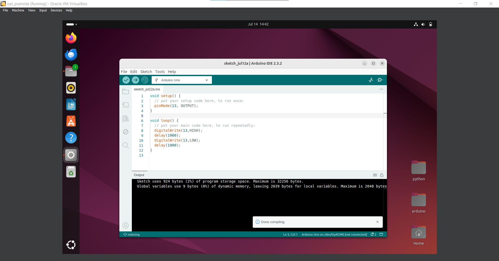

Assignments: 2024-07-12 Document
Task 1: Installation of Arduino IDE software on an Ubuntu VM
1.1 Install the Arduino IDE on the Ubuntu VM

We install Arduino using App center. The version installed is 1.8.19, the latest version.
Next, configure your USB port on the VMware to allow it to use your USB port. If you don't, you will encounter a problem where the VMware can't detect your Arduino. Upon connecting with the Arduino, the "Arduino Srl Arduino Uno [0001]" should appear.
1.2 Open the Arduino IDE and open the Blink sketch from the Arduino Examples
Now, test your Arduino using the Blink sketch example from Arduino.
1.3 Select an Arduino board as the target, such as Arduino Uno or Nano
Select the Arduino board you are using. In this case, it is Arduino Uno. Also, specify the port that it is connected to.
1.4 Build the Arduino sketch example
Build and verify the code you will upload to your Arduino by clicking the verify button.
1.6 Upload the compiled Arduino sketch to the Arduino board
Finally, upload your code to the Arduino board. Click the upload button (the arrow pointing to the right). If everything is correct, the orange LED on the Arduino board should start blinking!
Task 2: Installation of VS Code IDE software and extensions
2.1 Install VS Code IDE for Windows (Host OS)

Download VS Code to remotely access your VMware for coding your Arduino board.
2.2 Install the Remote Development Extension Pack for VS Code IDE
Download the extension for remote access to VMware.
2.3 Connect VS Code to the remote machine (Ubuntu)

Configure your VMware network to use a bridge network for LAN connectivity.
Create an SSH connection to connect to your VMware.
Once connected, your terminal should switch to the VMware environment.
2.4 Install the PlatformIO extension for Remote Development

Download the PlatformIO extension to write Arduino code in VS Code.
You might face an issue where the PIO home page isn't visible because the port settings of VS Code in Linux and the default port of PIO home differ. To workaround, I created the project and performed tasks via the command prompt.
2.5 Create a project using PlatformIO and the Arduino framework

Create your project with PlatformIO using the command pio project init --board uno.
If successful, a folder will be created for you. To sketch Arduino code, go to the src folder and create a .cpp file for your Arduino code.
2.6 Build the Arduino sketch and upload it to the target
After writing your code, build and verify it by clicking the build button. It should say SUCCESS in the terminal. Now, you're ready to upload it.
When the upload is successful, the orange light on the Arduino should start blinking!